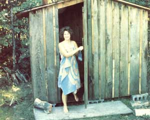
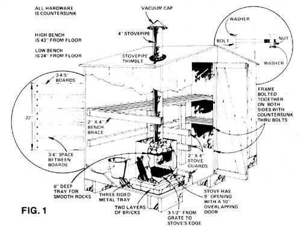

In case you thought you had to be wealthy-or at least moderately affluent-to afford a genuine, outdoor, wood-fired Finnish sauna here's a report from a sauna enthusiast (Steve Armstrong Lyons) in Bloomfield Hills, Michigan who knows different!
What an ad. The photo showed a lovely, towel-clad model reclining on a smooth redwood bench in a handsomely paneled room. Healthy beads of perspiration trickled down her brow as she ladled water from a wooden bucket onto the stones in the heater below. Under the picture, the caption read: BUILD THIS BEAUTIFUL, HEALTHFUL FINNISH SAUNA. KITS AS LOW AS $449.
"Yeah," I said to myself. "Sure would be nice to have a sauna like that ... but four hundred and fifty bucks? No way!" My pal Tom was unemployed at the time ... and I was, ah, between jobs myself. And to be sure, we didn't have the kind of money mentioned in that classy ad ... although we dearly wanted our own sauna.
You've heard the old saying, "Where there's a will, there's a way"? Well, I'm happy to report that-thanks to a little resourcefulness on our part, a bit of luck, and some help from our friends-Tom and I have been able to build an efficient, cozy, roomy (for four people), down-home, woodburning Finnish sauna (see photo). And it didn't cost us $450. In fact, it didn't even cost us $50, if you can believe that.
I'll have to admit, fate was with us when we began our search for free building materials ... because right off the bat we stumbled onto a couple of half-moon "houses (made of rough-sawn pine) sifting 'behind an abandoned migrant workers' camp. Each was 4' X 4' X 7', in excellent shape, and-as luck would have it?completely odorless. We tactfully approached the cherry farmer who owned the pair of biffies ... and he let us have them for a chortle, a chuckle, and a good-natured guff aw.
Back at the cottage, Tom and I -aided by Kathy Kalcec's brainpower?came up with a brilliant idea: Rather than dismantle the privies for their wood, why not hook the two units together to form one larger structure (our sauna)?
With this idea in mind, we laid out a foundation of six cinder blocks. Thenafter removing the seats, face, and roof of each outhouse-we positioned the two buildings on the blocks so they faced each other. At this point, friend and ace carpenter Chris Knowles arrived on the scene to help Tom and me mate the two outhouses to one another. (We used 3-1/2" through-bolts to lock the two structures together. See Fig. 1.
Tom made a new door for the sauna from one of the old outhouse doors and hung it using the original hardware. Reroofing the structure was then simply a matter of nailing the old roof boards (which we'd taken off prior to mating the two halves) back on and trimming off any overhang.
Next, we worked on the sauna's interior. First, we added 2 X 4 bench braces to the walls (Fig. 1) ... then-after rounding the boards' edges and sanding their surfaces smooth (no splinters!) - I laid out the bench boards, spacing them 3/4" apart for good ventilation (Fig. 1), and spiked the boards in place with finishing nails driven deep. (Note: Not being sadistic at heart, I decided to countersink all the metal hardware inside our hot house. Believe me, if you were to sit on a set of 170'F nail headsand 170OF is a minimum temperature for most saunas-you'd go screamin' through the roof clutching your branded fanny in both hands!)
At this point, we placed a three-sided metal tray (which we'd found inside an old sugar shack) on the floor in one corner of the sauna, then lined the inside rim of the tray with two layers of brick. Then we placed our stove (which has a grill in its bottom) on top of the bricks so that ashes would fall directly into the tray below as the fire burned.
You're probably wondering about the stove. After all, it's usually the most expensive part of any sauna, right? Well, Tom and I put our heating unit together?believe it or not-for the price of two metal hinges (about $2.00). Tom cut the rest of the stove's pieces out of some 1/16" scrap steel and had an apprentice welder (who needed the practice and didn't charge us anything) weld the pieces together.
A trip to the local junkyards turned up no usable stovepipe, so we ended up spending $2.35 at the hardware store for what we needed. We ran the 4-diameter pipe from the stove to a 5"-wide hole in the sauna's roof. (I strongly recommend that you use a "stovepipe thimble"?cost: about $2.50?to ensure proper insulation between the pipe and the roof. We didn't know there was such a thing when we built our sauna and instead improvised a collar from some galvanized sheet metal.) After installing the stovepipe, we nailed two-by-fours in front of the wood-burner to act as guard rails.
Next, we set about looking for some stones to put atop the heater. As you probably know, the best stones to use are those that've been worn smooth by Mother Nature (since smooth rocks are less prone to crack than craggy ones). Rounded stones from the bottom of a stream or lake are ideal. [Be sure to let such stones dry completely before you heat them. Even the smallest amount of moisture trapped inside the rocks can make them shatter-perhaps violently?when they're first used in a sauna.MOTHER.] Chris was able to gather a rucksack full of suitable stones on the beach in a half hour.
The first time we fired up the stove, we were pleasantly surprised at its efficiency. The draw was terrific, and in no time at all the fire was roaring. As the rocks on top of the stove heated up, Chris fashioned a ladle from an old mushroom can and a birch branch. We took it into the sauna along with a bucket of water, and then-after we'd stripped down and gotten used to the heat-Tom splashed a little water on the sizzling rocks ... whereupon we instantly experienced a super blast of hot air!
Twenty minutes later-after several more "blasts" of heat (each one accompanied by emphatic "oohs" and "aahs')?three steaming bodies ran outside to leap into cool, blue Lake Michigan. Have you ever felt so clean that your skin literally tingled all over? Quite a rush, I must say!
I've bathed in commercial saunas, and I can tell you honestly that-for sheer atmosphere and charm -they just can't compare to our little homebuilt model. Yet our homespun Finnish bathhouse was much less expensive to build than any sauna I've ever been in. All told, Tom and I figure we spent $19.54 on the project: $2.35 for stovepipe, $4.26 for miscellaneous hardware, and an outrageous $12.93 to rent the trailer we used to haul the privies from the camp to our cottage. Everything else was scrounged.
My brothers-Matt and Dave-and my father did make some later additions to the bathhouse: For instance, they put a vacuum cap on the stovepipe, shingled the roof, caulked the building's seams, and gave the exterior a coat of wood preservative (estimated cost: $30). We could easily have done without most of these items, however ... and did, at first.
So, if you crave a sauna ... don't let a high price tag put a damper on a hot idea! You can have that authentic, wood-fired Finnish sauna that you've always wanted ... and you don't have to pay $450 (or even $50) to get it. All you have to do is scrounge a little ... and "think sauna"!
|
 |
 |
|